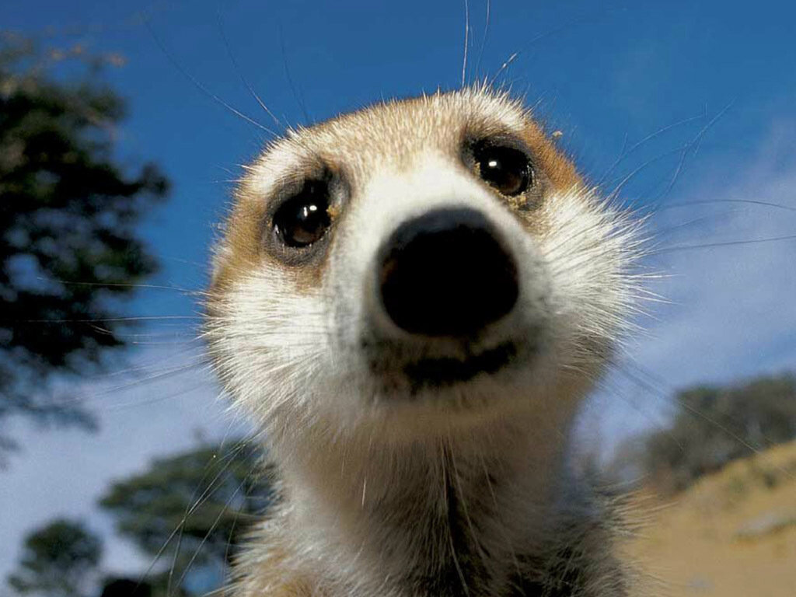
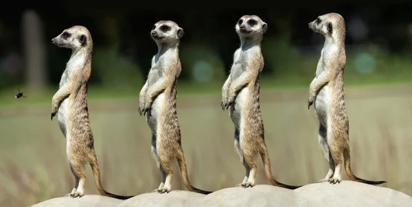
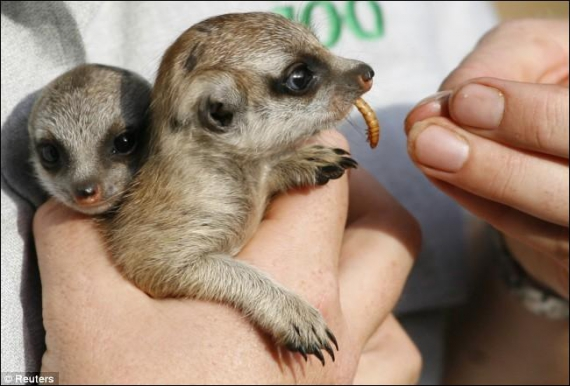
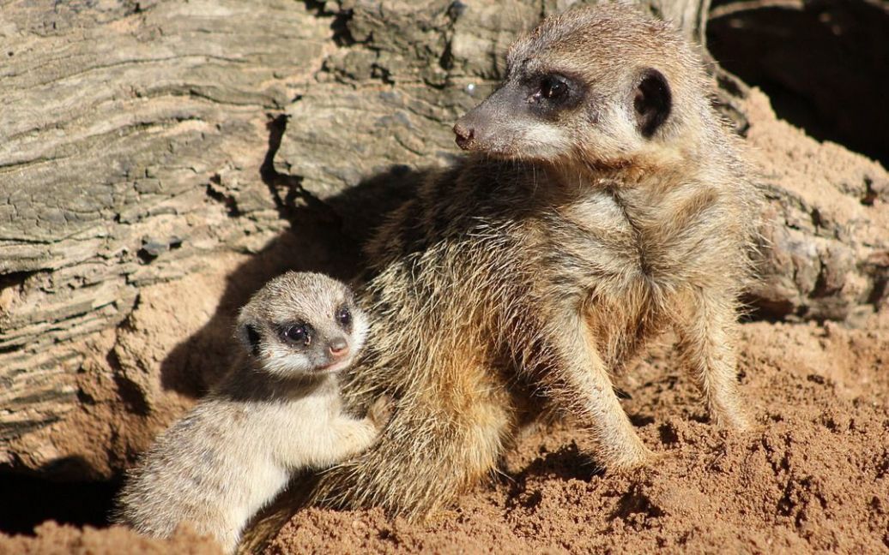
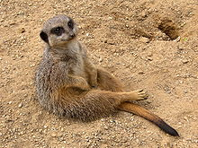

Сурикат — хижий ссавець з родини мангустових, єдиний сучасний представник роду Suricata. Мешкаю в пустелі Калахарі, що в Південній Африці. Ми зустрічаємся в таких країнах, як-от Ангола, Ботсвана, Намібія, ПАР. Середня тривалість життя становить 12—14 років.
SearchДеякі сурикати живуть у гірських районах, захистками для них у цьому випадку є невеликі скелясті печерки. Сурикати риють нори в кам'янистому ґрунті Калахарі або користуються залишеними норами африканської земляної білки. Самі ж нори мають заплутану систему тунелів на глибині до 2 м. Ці житла мають сотні виходів на поверхню і займають до 800 кв. м.
Як високоорганізовані тварини сурикати об'єднуються в колонії, що складаються з двох-трьох сімейних груп по 20—30 особин. Проте деякі надсім'ї мають по 50 представників або й більше. У кожної сім'ї сурикатів — своя територія, яка досягає до 12 кв. км. Сурикати ведуть денний спосіб життя, у теплий день вони гріються на сонці.
Довжина голови й тіла: 250—350 мм, хвіст: 175—250 мм.Самці трохи дрібніші за самиць, а середня вага близько 750 грамів. Шерсть довга і м'яка, а підшерстя темно-рудого кольору.Передні ноги мають дуже довгі, сильні кігті.У сурикатів чудовий зір:темні захисні смужки довкола очей дозволяють дивитися прямо на сонце.
Сурикати харчуються переважно цибулинами рослин, сараною, скорпіонами, термітами та іншими комахами, невеликими зміями та їхніми яйцями, птахами, пташиними яйцями, а також добувають земляних білок, мишей і піщанок. До отрути змій та скорпіонів сурикати мають імунітет.
Коли сурикати йдуть на полювання у норі залишається кілька нянь, щоб стежити за новонародженими дитинчатами. Цей обов’язок чергується між різними членами зграї, і няня часто обходиться без їжі цілий день. Основне завдання нянь — захищати дитинчат від сурикатів ворогуючих зграй.
Поки всі сурикати із групи шукають їжу, один із сурикатів (або іноді більше), який називається вартовим, знаходить високу точку, і сідає на задні лапи. Звідси він сканує територію і при появі хижаків, таких як орли, яструби та шакали видає пронизливий вереск, змусивши товаришів кинутися в укриття.
